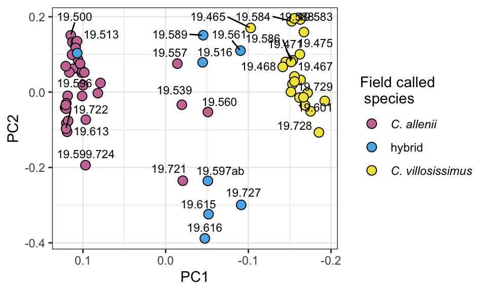

Note: This is a quarto file. Quarto enables you to weave together content and executable code into a finished document. Learn more about Quarto here
The below chunk will not be displayed when rendering - good for opening packages
(GREAT PACKAGES TO LOOK INTO! plotly, interactive ggplots with ggplotly! leaflet() interactive maps and more!!)
can do in line code that actually runs! eg:
Code
c=2+3
The value of c is 5 - great for printing p-vals, or other saved values
This markdown summarizes the PCAs I generated by running PCAngsd on the genotype likelihood (beagle) file generated from clean bams with greater than 0.05x coverage WITH -sites specified based on bcftools site filtering.
1.0.0.1 PCAs of alle, vill, and hybrids only (ANGSD_1; only selected sites with 0.05x coverage cutoff)
PCAngsd run on beagle file from angsd1 (samtools; see ‘ANGSD run tracking - full dataset’ in [g-drive]/GitHub/seq_analysis/ANGSD/angsd_runs with estimation of independent allele frequencies. Plot created from output of the following code: python pcangsd.py -beagle $IN_DIR/selected_sites_0.05co_AVH.genolike.beagle.gz -o $OUT_DIR/sites_0.15co_AVH_2_PCAngsd
Warning: ggrepel: 38 unlabeled data points (too many overlaps). Consider
increasing max.overlaps

1.0.0.2 PCAs of alle, vill, hybrids, guan, and laev (ANGSD_1; only clean bams with 0.15x coverage cutoff - less than 35bp and lower than 20 mapping Q removed)
##FIX## #PCAngsd run on beagle file from angsd1 (samtools; see ‘ANGSD run tracking - full dataset’ in #[g-drive]/GitHub/seq_analysis/ANGSD/angsd_runs with estimation of independent allele frequencies. #Plot created from output of the following code:
#pcangsd.py -beagle $IN_DIR/full_AVHLG_genolike.beagle.gz -o $OUT_DIR/AVHLG_1_PCAngsd -threads 44
Warning: ggrepel: 59 unlabeled data points (too many overlaps). Consider
increasing max.overlaps
Source Code
---title: "Population genetics analyses compiled"author: "Julia Harenčár"date: "5/2/2022"format: html: code-fold: true code-tools: true code-overflow: wrap toc: true number-sections: truetheme: light: minty dark: superhero---## QuartoNote: This is a quarto file. Quarto enables you to weave together content and executable code into a finished document. [Learn more about Quarto here](https://quarto.org)The below chunk will not be displayed when rendering - good for opening packages\\(GREAT PACKAGES TO LOOK INTO! plotly, interactive ggplots with ggplotly! leaflet() interactive maps and more!!)\can do in line code that actually runs! eg:```{r}c=2+3```The value of c is `r c` - great for printing p-vals, or other saved values```{r}#| echo: falselibrary(ggplot2)library(ggrepel)```# title: "ANGSD_selected_sites_co0.15x.Rmd"author: "Julia Harenčár" date: "5/2/2022" output: html_document```{r setup, include=FALSE}knitr::opts_chunk$set(echo =TRUE,fig.height =3,fig.path ="PCAngsd_figs/",fig.width =5)knitr::opts_knit$set(root.dir ='/Users/Julia/Library/CloudStorage/GoogleDrive-jharenca@ucsc.edu/My Drive/GitHub/seq_analysis/ANGSD')```This markdown summarizes the PCAs I generated by running PCAngsd on the genotype likelihood (beagle) file generated from clean bams with greater than 0.05x coverage WITH -sites specified based on bcftools site filtering.#### PCAs of alle, vill, and hybrids only (ANGSD_1; only selected sites with 0.05x coverage cutoff)PCAngsd run on beagle file from angsd1 (samtools; see 'ANGSD run tracking - full dataset' in `[g-drive]/GitHub/seq_analysis/ANGSD/angsd_runs` with estimation of independent allele frequencies. Plot created from output of the following code:\`python pcangsd.py -beagle $IN_DIR/selected_sites_0.05co_AVH.genolike.beagle.gz -o $OUT_DIR/sites_0.15co_AVH_2_PCAngsd````{r full_angsd1_AVH_PCA, echo=FALSE}## Need to re-visit: includes less than 0.05 cutoff samples, but not sure that is badAVHpop <-read.table("angsd_out/AVH_clean_211104.pop.info")cov <-as.matrix(read.table("angsd_out/PCAngsd/sites_0.05co_AVH_2_PCAngsd.cov"))e <-eigen(cov)PC1 <- e$vectors[,1]PC2 <- e$vectors[,2]spp <- AVHpop[,2]ID <- AVHpop[,1]PC12.AVH1.co0.15<-data.frame(PC1, PC2, ID, spp)ggplot(PC12.AVH1.co0.15, aes(x=PC1, y=PC2, fill=spp)) +geom_point(size =3, pch =21, colour="black") +scale_fill_manual(values=c("#CC79A7", "#56B4E9", "#F0E442"), name=paste("Field called \n species"), labels=c(expression(italic("C. allenii")), "hybrid", expression(italic("C. villosissimus")))) +scale_x_reverse() +theme_bw() +theme(legend.text.align =0) +geom_text_repel(aes(label=ID), size =3, nudge_y =0.03)#ggtitle("AVH1.selected.sites.co0.15x") +#geom_text_repel(aes(label=ID), size =3, nudge_y = 0.03)## example of how to add repelled text labels:#library(ggrepel)#ggplot(mtcars, aes(wt, mpg, label = rownames(mtcars))) +# geom_text_repel() +# geom_point(color = 'red') +# theme_classic(base_size = 16)```#### PCAs of alle, vill, hybrids, guan, and laev (ANGSD_1; only clean bams with 0.15x coverage cutoff - less than 35bp and lower than 20 mapping Q removed)##FIX## #PCAngsd run on beagle file from angsd1 (samtools; see 'ANGSD run tracking - full dataset' in \#`[g-drive]/GitHub/seq_analysis/ANGSD/angsd_runs` with estimation of independent allele frequencies. #Plot created from output of the following code:\\#`pcangsd.py -beagle $IN_DIR/full_AVHLG_genolike.beagle.gz -o $OUT_DIR/AVHLG_1_PCAngsd -threads 44````{r full_angsd1_AVHLG_PCA, echo=FALSE}LGVHApop <-read.table("angsd_out/LGVHA.clean.pop.info")cov <-as.matrix(read.table("angsd_out/PCAngsd/sites_0.15co_nosml_q20_LGVHA_PCAngsd.cov"))e <-eigen(cov)PC1 <- e$vectors[,1]PC2 <- e$vectors[,2]spp <- LGVHApop[,2]ID <- LGVHApop[,1]PC12.LGVHA.co0.15X <-data.frame(PC1, PC2, ID, spp)library(ggplot2)ggplot(PC12.LGVHA.co0.15X, aes(x=PC1, y=PC2)) +geom_point(aes(color=factor(spp))) +ggtitle("LGVHA.co0.15x") +geom_text_repel(aes(label=ID), size =3, nudge_y =0.03) #labeling code to check out:#ggplot(tab, aes(x = EV2, y = EV1, col = pop)) +# geom_point(alpha = 0.5, size = 5) +# # geom_text(aes(label=sample.id), size =3, hjust = 0, nudge_x = 0.02) +# # geom_text(aes(label=sample.id), size =3, position=position_jitter(width=0.2,height=0,2)) +# geom_text_repel(aes(label=sample.id), size =3, nudge_y = 0.03) +# theme_bw()```